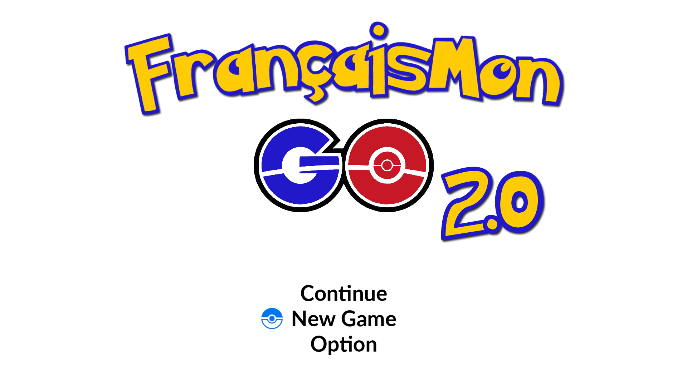
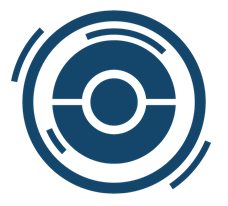
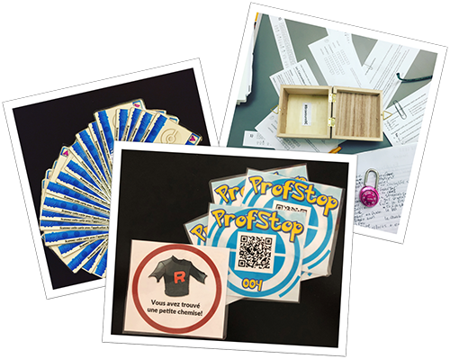
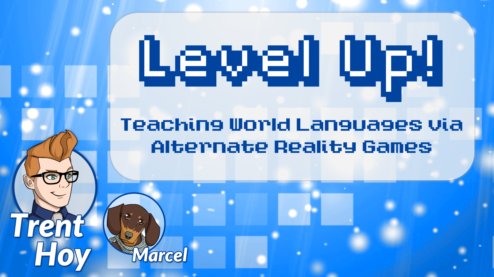

Re-imagined as an alternate reality game, FrançaisMon GO is back in Version 2.0! Integrated directly into FRE1121's study of Chapter 10, this edition is bigger and better than ever. With an overarching story and a slew of new features and challenges, FrançaisMon GO 2.0 seeks to harness aspects of gamified learning to turn class activities upside down!
Key Elements
- Hatch and raise a partner Pokémon by completing activities and earning experience points to level up!
- Join one of three teams, collaborating and competing with your fellow trainers!
- Complete a variety of physical and digital activities to learn and practice new content, all while experiencing an episodic story!
- Tackle gym challenges to earn badges!
- Join forces with your fellow trainers to face off against a secret boss in the ultimate timed challenge!
L’aventure commence!Receive your partner Pokémon and begin your adventure! |
 |
 |
Instructor OverviewCheck out this quick summary of the overall game structure and how I integrated it into the curriculum! |
GallerySee pictures from throughout the game! |
 |
|
 |
PresentationCheck out the presentation I gave about this gamified experience! |
© Trent Hoy 2016-2019 – Not affiliated with The Pokémon Company International, owner of Pokémon and related images